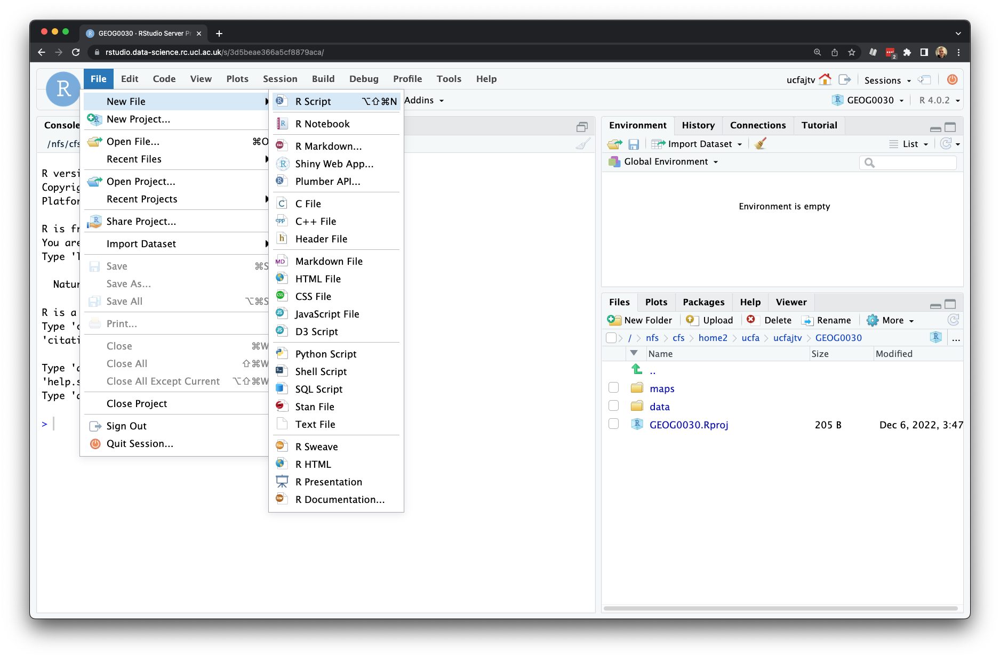
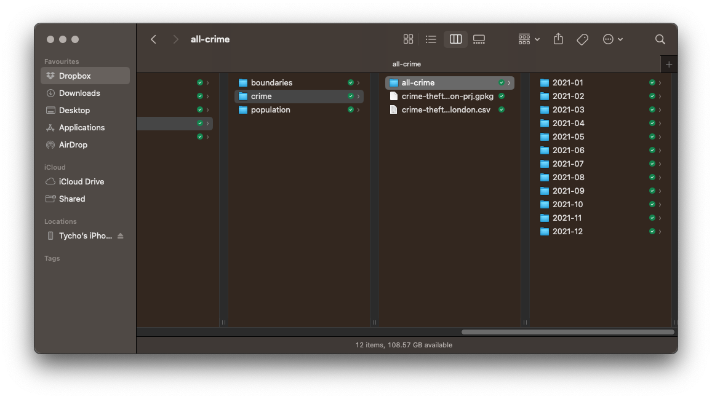
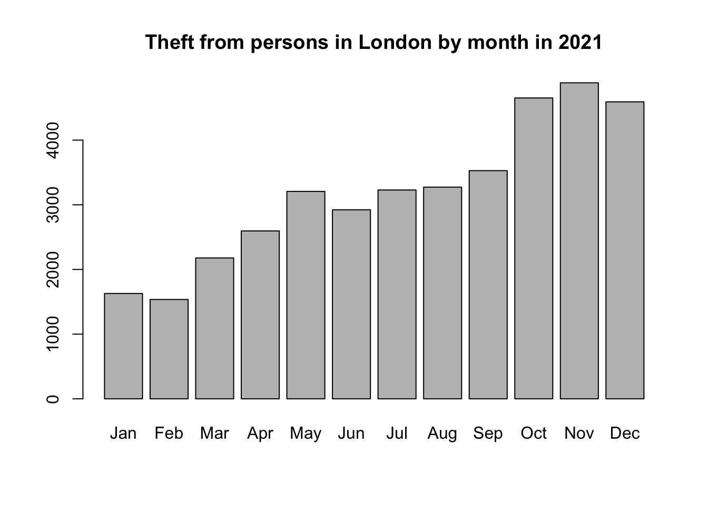

4 Programming for Data Analysis
This week’s content introduces you to the foundational concepts associated with Programming for Data Analysis. We will cover some general principles of programming as well how we can use R and RStudio effectively for data analysis by continuing to look at crime in London.
4.1 Lecture slides
The slides for this week’s lecture can be downloaded here: [Link]
4.2 Reading list
Essential readings
- Hadley, W. 2017. R for Data Science. Chapter 3: Workflow: basics. [Link]
- Hadley, W. 2017. R for Data Science. Chapter 4: Data transformation. [Link]
- Hadley, W. 2017. R for Data Science. Chapter 7: Workflow: scripts and projects. [Link]
- Lovelace, R., Nowosad, J. and Muenchow, J. 2021. Geocomputation with R, Chapter 1: Introduction. [Link]
Suggested readings
- Arribas-Bel, D. et al. 2021. Open data products - A framework for creating valuable analysis ready data. Journal of Geographical Systems 23: 497-514. [Link]
4.3 Programming in R
Programming is our most fundamental way of interacting with a computer, it was how computers were first built and operated and for a long time, the Command Line Interface (CLI) was our primary way of using computers before our Graphical User Interface (GUI) Operating Systems (OS) and software became mainstream. Nowadays, the majority of us use our computers through clicking instead of typing. However, programming and computer code underpin every single application that we use on our computers.
Programming is used for endless purposes and applications, ranging from software engineering and application development, to creating websites and managing databases at substantial scales. To help with this diversity of applications, multiple types of programming languages have developed. Wikipedia, for example, has a list of hundreds of different languages, although there is some overlap between many of these, some are used for incredibly niche activities, and some are not used any more at all.
4.3.1 R
We will be using R in this module as the main tool to complete specific tasks we need to do for our data analysis. There are a lot of alternative tools out there that you can use to achieve the same outcomes (as you have seen with QGIS, and no doubt had experience of using some statistics/spreadsheet software) but we choose to use this tool because it provides us with many advantages over these other tools.
What is important to understand is that R and RStudio are two different things:
- R is our programming language, which we need to understand in terms of general principles, syntax and structure.
- RStudio is our Integrated Development Environment (IDE), which we need to understand in terms of functionality and workflow. An IDE is simply software programme that makes creating and organising your code easier.
As you may know already, R is a free and open-source programming language, that originally was created to focus on statistical analysis. In conjunction with the development of R as a language, the same community created the RStudio IDE to execute this statistical programming. Together, R and RStudio have grown into an incredibly success partnership of analytical programming language and analysis software. As a result, it has a huge and active contributor community which constantly adds functionality to the language and software, making it an incredibly useful tool for many purposes and applications beyond statistical analysis.
Unlike traditional statistical analysis programmes you may have used such as Microsoft Excel or even ArcGIS Online, within the RStudio IDE, the user has to type commands to get it to execute tasks such as loading in a dataset or performing a calculation. We primarily do this by building up a script, that provides a record of what you have done, whilst also enabling the straightforward repetition of tasks.
We can also use the R Console to execute simple instructions that do not need repeating such as installing libraries or quickly viewing data. In addition, R, its various graphic-oriented packages and RStudio are capable of making graphs, charts and maps through just a few lines of code which can then be easily modified and tweaked by making slight changes to the script if mistakes are spotted. Unfortunately, command-line computing can also be off-putting at first. It is easy to make mistakes that are not always obvious to detect and thus debug. Nevertheless, there are good reasons to stick with R and RStudio. These include:
- It is broadly intuitive with a strong focus on publishable-quality graphics.
- It is ‘intelligent’ and offers in-built good practice; it tends to stick to statistical conventions and present data in sensible ways.
- It is free, cross-platform, customisable and extendable with a whole swathe of packages (libraries) including those for discrete choice, multilevel and longitudinal regression, mapping, spatial statistics, spatial regression, geostatistics, network analysis, etc.
- It is well respected and used at the world’s largest technology companies including Google, Microsoft and Facebook.
- It offers a transferable skill that shows to potential employers experience both of statistics and of computing.
The intention of the practical elements of this week is to provide a thorough introduction to RStudio to get you started:
- The basic programming principles behind R.
- Loading in data from
csvfiles, filtering and subsetting it into smaller chunks and joining them together. - Calculating a number of statistics for data exploration and checking.
- Creating basic and more complex plots in order to visualise the distributions values within a dataset.
What you should remember is that R has a steep learning curve, but the benefits of using it are well worth the effort. The best way to really learn R is to take the basic code provided in tutorials and experiment with changing parameters such as the colour of points in a graph to really get ‘under the hood’ of the software.
4.3.2 RStudio
You should all have access to some form of R on your personal computer, or through Desktop@UCL Anywhere or the RStudio Server. If not, please refer to the Geocomputation: An Introduction section. Go ahead and open RStudio and we will first take a quick tour of the various components of the RStudio environment interface and how and when to use them. When you first open RStudio, it should look a little something like this:
The main windows (panel/pane) to keep focused on for now are:
- Console: where we write “one-off” code, such as installing libraries/packages, as well as running quick views or plots of our data.
- Files: where our files are stored on our computer system, also helpful for general file management.
- Environment: where our variables are recorded; we can find out a lot about our variables by looking at the environment window, including data structure, data type(s) and the fields and ‘attributes’ of our variables.
- Plots: where the outputs of our graphs, charts and maps are shown
- Help: where you can search for help, e.g. by typing in a function to find out its parameters.
You may also have your Script Window open, which is where we build up and write code. This not only helps us to keep a record of our work, but also enables us to repeat and re-run code again. We will not use this window until we get to the final practical instructions.
We will see how we use these windows as we progress through this tutorial and understand in more detail what we mean by words such as attributes (do not get confused here with the Attribute Table for QGIS) and data structures.
4.4 RStudio console
We will first start off with using RStudio’s console to test out some of R’s in-built functionality by creating a few variables as well as a dummy dataset that we will be able to analyse.
You might need to click on the console window to get it to expand; you can then drag it to take up a larger space in your RStudio window.
In your console, let us go ahead and conduct some quick maths. At their most basic, all programming languages can be used like calculators.
In your RStudio console, you should see a prompt sign > on the left hand side. This is where we can directly interact with R. Anything that appears as red in the command line means it is an error (or a warning) so you will likely need to correct your code. If you just see a > it means you can type in your next line, whilst a + means that you have not finished the previous line of code. As will become clear, + signs often appear if you do not close brackets or you did not properly finish your command in a way that R expected.
4.4.1 Command Input
Type in 10 * 12 into the console.
R code
# conduct some maths
10 * 12[1] 120Once you press return, you should see the answer of 120 returned below.
4.4.2 Storing variables
Rather than use raw or standalone numbers and values, we primarily want to use variables that store these values (or groups of them) under a memorable name for easy reference later. In R terminology this is called creating an object and this object becomes stored as a variable. The <- symbol is used to assign the value to the variable name you have given. Let us create two variables to experiment with.
Type in ten <- 10 into the console and execute.
R code
# store a variable
ten <- 10You have just created your first variable. You will see nothing is returned in the console, but if you check your environment window it has now appeared as a new variable that contains the associated value.
Type in twelve <- 12 into the console and execute.
R code
# store a variable
twelve <- 12Once again, you will see nothing returned to the console but do check your environment window for your variable. We have now stored two numbers into our environment and given them variable names for easy reference. R stores these objects as variables in your computer’s RAM memory so they can be processed quickly. Without saving your environment, these variables would be lost if you close R. Now we have our variables, we can go ahead and execute the same simple multiplication:
Type in ten * twelve into the console and execute.
R code
# using variables
ten * twelve[1] 120You should see the output in the console of 120. Whilst this maths may look trivial, it is, in fact, extremely powerful as it shows how these variables can be treated in the same way as the values they contain.
Next, type in ten * twelve * 8 into the console and execute.
R code
# using variables and values
ten * twelve * 8[1] 960You should get an answer of 960. As you can see, we can mix variables with raw values without any problems. We can also store the output of variable calculations as a new variable.
Type output <- ten * twelve * 8 into the console and execute.
R code
# store output
output <- ten * twelve * 8Because we are storing the output of our maths to a new variable, the answer is not returned to the screen.
4.4.3 Accessing and returning variables
We can ask our computer to return this output by simply typing it into the console. You should see we get the same value as the earlier equation.
R code
# return value
output[1] 9604.4.4 Variables of different data types
We can also store variables of different data types, not just numbers but text as well.
Type in str_variable <- "This is our 1st string variable" into the console and execute.
R code
# store a variable
str_variable <- "This is our 1st string variable"We have just stored our sentence made from a combination of characters, including letters and numbers. A variable that stores “words” (that may be sentences, or codes, or file names), is known as a string. A string is always denoted by the use of quotation marks ("" or '').
Type in str_variable into the console and execute.
R code
# return variable
str_variable[1] "This is our 1st string variable"You should see our entire sentence returned,enclosed in quotation marks (""). Again, by simply entering our variable into the console, we have asked R to return our variable to us.
4.4.5 Calling functions on our variables
We can also call a function on our variable. This use of call is a very specific programming term and generally what you use to say ‘use’ a function. What it simply means is that we will use a specific function to do something to our variable. For example, we can also ask R to print our variable, which will give us the same output as accessing it directly via the console.
Type in print(str_variable) into the console and execute.
R code
# printing a variable
print(str_variable)[1] "This is our 1st string variable"We have just used our first function: print(). This function actively finds the variable and then returns this to our screen.
You can type ?print into the console to find out more about the print() function.
R code
# open documentation of the print function
?printThis can be used with any function to get access to their documentation which is essential to know how to use the function correctly and understand its output.
In many cases, a function will take more than one argument or parameter, so it is important to know what you need to provide the function with in order for it to work. For now, we are using functions that only need one required argument although most functions will also have several optional or default parameters.
4.4.6 Returning functions
When a function provides an output, such as this, it is known as returning. Not all functions will return an output to your screen, so often we require a print() statement or another type of returning function to check whether the function was successful or not. More on this later.
4.4.7 Examining our variables using functions
Within the base R language, there are various functions that have been written to help us examine and find out information about our variables. For example, we can use the typeof() function to check what data type our variable is.
Type in typeof(str_variable) into the console and execute.
R code
# call the typeof() function
typeof(str_variable)[1] "character"You should see the answer: character. As evident, our str_variable is a character data type. We can try testing this out on one of our earlier variables too.
Type in typeof(ten) into the console and execute.
R code
# call the typeof() function
typeof(ten)[1] "double"You should see the answer: double. As evident, our ten is a double data type. For high-level objects that involve (more complicated) data structures, such as when we load a csv into R as a dataframe, we are also able to check what class our object is. Type in class(str_variable) into the console and execute.
R code
# call the class() function
class(str_variable)[1] "character"In this case, you will get the same answer because in R both its class and type are the same: a character. In other programming languages, you might have had string returned instead, but this effectively means the same thing.
Type in class(ten) into the console and execute.
R code
# call the class() function
class(ten)[1] "numeric"In this case, you will get a different answer because the class of this variable is numeric. This is because the class of numeric objects can contain either doubles (decimals) or integers (whole numbers). We can test this by asking whether our ten variable is an integer or not.
Type in is.integer(ten) into the console and execute.
R code
is.integer(ten)[1] FALSEYou should see we get the answer FALSE: as we know from our earlier typeof() function our variable ten is stored as a double and therefore cannot be an integer.
Whilst knowing how to distinguish between different data types might not seem important now, the difference of a double versus an integer can quite easily lead to unexpected errors.
We can also ask how long our variable is. in this case, we will find out how many different sets of characters (strings) are stored in our variable, str_variable.
Type in length(str_variable) into the console and execute.
R code
# call the length() function
length(str_variable)[1] 1You should get the answer 1 because we only have one set of characters. We can also ask how long each set of characters is within our variable, i.e. ask how long the string contained by our variable is.
Type in nchar(str_variable) into the console and execute.
R code
# call the nchar() function
nchar(str_variable)[1] 31You should get an answer of 31.
4.4.8 Creating a two-element object
Let us go ahead and test these two ‘length’ functions a little further by creating a new variable to store two string sets within our object, i.e. our variable will hold two elements.
Type in two_str_variable <- c("This is our second variable", "It has two parts to it") into the console and execute.
R code
# store a new variable
two_str_variable <- c("This is our second string variable", "It has two parts to it")In this piece of code, we have created a new variable using the c() function in R, that stands for combine values into a vector or list. We have provided that function with two sets of strings, using a comma to separate our two strings - all contained within the function’s brackets (()). You should now see a new variable in your environment window which tells us it is a) chr: characters, b) contains two items, and c) lists those items.
Let us now try both our length() and nchar() on our new variable and see what the results are:
R code
# call the length() function
length(two_str_variable)[1] 2# call the nchar() function
nchar(two_str_variable)[1] 34 22You should notice that the length() function now returned a 2 and the nchar() function returned two values of 34 and 22.
There is one final function that we often want to use with our variables when we are first exploring them, which is attributes(). Because our current variables are very simple, they do not have any attributes but it is a really useful function, which we will come across later on.
R code
# call the attributes() function
attributes(two_str_variable)NULLIn addition to make notes about the functions you are coming across in the workshop, you should notice that with each line of code in the examples, an additional comment is used to explain what the code does. Comments are denoted using the hash symbol #. This comments out that particular line so that R ignores it when the code is run. These comments will help you in future when you return to scripts a week or so after writing the code as well as help others understand what is going on when sharing your code. It is good practice to get into writing comments as you code and not leave it to do retrospectively. Whilst we are using the console, using comments is not necessary but as we start to build up a script later on, you will find them essential to help understand your workflow in the future.
4.5 Getting started
The objects we created and played with above are very simple but the real power of R comes when we can begin to execute functions on more complex objects. R accepts four main types of data structures: vectors, matrices, dataframes, and lists. These data structures are essential because they allow us to apply common statistical functions.
We are going to explore these data structures with some of dummy data on the total number of pages and publication dates of the various editions of Geographic Information Systems and Science (GISS) book by Longley et al. and use these for a brief analysis:
| Book Edition | Year of Publication | Total Number of Pages |
|---|---|---|
| 1st | 2001 | 454 |
| 2nd | 2005 | 517 |
| 3rd | 2011 | 560 |
| 4th | 2015 | 477 |
4.5.1 Housekeeping
First, let us clear up our workspace and remove our current variables. Type rm(ten, twelve, output, str_variable, two_str_variable) into the console and execute.
R code
# clear our workspace
rm(ten, twelve, output, str_variable, two_str_variable)You should now see we no longer have any variables in our window. We just used the rm() function to remove these variables from our environment and free up some RAM. Keeping a clear workspace is another recommendation of good practice moving forward. Of course, we do not want to get rid of any variables we might need to use later but removing any variables we no longer need (such as test variables) will help you understand and manage your code and your working environment.
4.5.2 Atomic vectors
The first complex data object we will create is a vector. A vector is the most common and basic data structure in R. Vectors are a collection of elements that are mostly of either character, logical integer or numeric data types. Technically, vectors can be one of two types:
- Atomic vectors (all elements are of the same data type)
- Lists (elements can be of different data types)
Let us create our first official vector, detailing the different total page numbers for GISS. Type gisspage_no <- c(454, 517, 560, 477) into the console and execute.
R code
# store the page numbers as a variable
giss_page_no <- c(454, 517, 560, 477)Type print(giss_page_no) into the console and execute to check the results.
R code
# print our giss_page_no variable
print(giss_page_no)[1] 454 517 560 477We can see we have our total number of pages collected together in a single vector. We could if we want, execute some statistical functions on our vector object:
R code
# calculate the arithmetic mean on our variable
mean(giss_page_no)[1] 502# calculate the median on our variable
median(giss_page_no)[1] 497# calculate the range numbers of our variable
range(giss_page_no)[1] 454 560We have now completed our first set of descriptive statistics in R. Let us see how we can build on our vector object by adding in a second vector object that details the relevant years of our book. Note that the total number of pages are entered in a specific order to correspond to these publishing dates (i.e. chronological) and therefore we will need to enter the publication year in the same order.
Type giss_year <- c(2001, 2005, 2011, 2015) into the console and execute.
R code
# store the publication years as a variable
giss_year <- c(2001, 2005, 2011, 2015)Type print(giss_year) into the console and execute.
R code
print(giss_year)[1] 2001 2005 2011 2015Of course, on their own, the two vectors do not mean much but we can use the same c() function that we used earlier to combine the two together to create a matrix.
4.5.3 Matrices
In R, a matrix is simply an extension of the numeric or character vectors. They are not a separate type of object per se but simply a vector that has two dimensions. That is they contain both rows and columns. As with atomic vectors, the elements of a matrix must be of the same data type. As both our page numbers and our years are numeric, we can add them together to create a matrix using the matrix() function.
Type giss_year_nos <- matrix(c(giss_year, giss_page_no), ncol=2) into the console and execute.
R code
# create a new matrix from our two vectors with two columns
giss_year_nos <- matrix(c(giss_year, giss_page_no), ncol = 2)Type print(giss_year_nos) into the console and execute to check the result.
R code
# inspect
print(giss_year_nos) [,1] [,2]
[1,] 2001 454
[2,] 2005 517
[3,] 2011 560
[4,] 2015 477The thing about matrices is that, for us, they do not have a huge amount of use. If we were to look at this matrix in isolation from what we know it represents, we would not really know what to do with it. As a result, we tend to primarily use dataframes in R as they offer the opportunity to add field names to our columns to help with their interpretation.
The function we just used above, matrix(), was the first function that we used that took more than one argument. In this case, the arguments the matrix needed to run were:
- What data or dataset should be stored in the matrix.
- How many columns (
ncol=) do we need to store our data in.
For any function, there will be mandatory arguments (i.e. it will not run without these) or optional arguments (i.e. it will run without these, as the default to this argument has been set usually to FALSE, 0 or NULL). These are normally documented in the documentation, including details on the format the function expects these arguments to be in.
Understanding how to find out what object and data type a variable is essential therefore to knowing whether it can be used within a function or whether we will need to transform our variable into a different data structure to be used for that specific function.
4.5.4 Dataframes
A dataframe is an extremely important data type in R. It is pretty much the de-facto data structure for most tabular data and the data structure we use for statistics. It also is the underlying structure to the table data (what we would call the attribute table in Q-GIS) that we associate with spatial data, more on this next week.
A dataframe is a special type of list where every element of the list will have the same length (i.e. dataframe is a ‘rectangular’ list), Essentially, a dataframe is constructed from columns (which represent a list) and rows (which represents a corresponding element on each list). Each column will have the same amount of entries - even if, for that row, for example, the entry is simply NULL.
dataframes can have additional attributes such as rownames(), which can be useful for annotating data, like subject_id or sample_id or UID. In statistics, they are often not used but in spatial analysis, these IDs can be essential to join data together. Some additional information on dataframes:
- They are usually created by
read.csv()andread.table(), i.e. when importing the data into R. - You can also create a new dataframe with
data.frame()function, e.g. a matrix can be converted to a dataframe. - You can find out the number of rows and columns with
nrow()andncol(), respectively. - Rownames are often automatically generated and look like
X1, X2, … , Xn. Consistency in numbering of rownames may not be honoured when rows are reshuffled or subset.
Type giss_df <- data.frame(giss_year_nos) into the console and execute.
R code
# create a new dataframe from our matrix
giss_df <- data.frame(giss_year_nos)We now have a dataframe, we can use the View() function in R. Still in your console, type: View(giss_df)
R code
# view our dataframe
View(giss_df)You should now see a table pop-up as a new tab on your script window. It is now starting to look like the table we are trying to create, but we need to do something about the fieldnames. X1 and X2 are not very informative.
4.5.5 Column names
We can rename our dataframe column field names by using the names() function. Before we do this, have a read of what the names() function does. Still in your console, type: ?names
R code
# open documentation of the names function
?namesAs you can see, the function will get or set the names of an object, with renaming occurring by using the following syntax: names(x) <- value
The value itself needs to be a character vector of up to the same length as x, or NULL. We have two columns in our dataframe, so we need to parse our names() function with a character vector with two elements. In the console, we shall enter two lines of code, one after another. First our character vector with our new names, new_names <- c("year", "page_nos"), and then the names() function containing this vector for renaming, names(giss_df) <- new_names:
R code
# create a vector with our new column names
new_names <- c("year", "page_nos")
# rename our columns with our next names
names(giss_df) <- new_namesYou can go and check your dataframe again and see the new names using either View() function or by clicking on the tab at the top.
4.5.6 Adding columns
We are still missing one final column from our dataframe: our edition of the textbook column. As this is a character data type, we would not have been able to add this directly to our matrix. This is because dataframes can take different data types, unlike matrices - so let us go ahead and add the edition as a new column.
To do so, we follow a similar process of creating a vector with our editions listed in chronological order, but then add this to our dataframe by storing this vector as a new column in our dataframe. We use the $ sign with our code that gives us “access” to the dataframe’s column - we then specify the column edition, which whilst it does not exist at the moment, will be created from our code that assigns our edition variable to this column.
Type and execute edition <- c("1st", "2nd", "3rd", "4th"). Then store this vector as a new column in our dataframe under the column name edition by typing and executing giss_df$edition <- edition:
R code
# create a vector witheditions
edition <- c("1st", "2nd", "3rd", "4th")
# add this vector as a new column to our dataframe
giss_df$edition <- editionAgain, you can go and check your dataframe and see the new column using either View() function, by clicking on the tab at the top or by typing giss_df in your console window, or by typing the name of the object into the console:
R code
# inspect
giss_df year page_nos edition
1 2001 454 1st
2 2005 517 2nd
3 2011 560 3rd
4 2015 477 4thNow we have our dataframe, let us find out a little about it. We can first return the dimensions (the size) of our dataframe by using the dim() function. In your console, type dim(giss_df) and execute.
R code
# check our dataframe dimensions
dim(giss_df)[1] 4 3We can see we have four rows and three columns. We can also finally use our attributes() function to get the attributes of our dataframe. In your console, type attributes(giss_df) and execute:
R code
# check our dataframe attributes
attributes(giss_df)$names
[1] "year" "page_nos" "edition"
$row.names
[1] 1 2 3 4
$class
[1] "data.frame"Some important notes to keep in mind:
- R is case-sensitive so you need to make sure that you capitalise everything correctly if required.
- The spaces between the words do not matter but the positions of the commas and brackets do. Remember, if you find the prompt,
>, is replaced with a+it is because the command is incomplete. If necessary, hit the escape (esc) key and try again. - It is important to come up with good names for your objects. In the case of the majority of our variables, we used an underscore (
_) to separate the words. It is good practice to keep the object names as short as possible but they still need to be easy to read and clear what they are referring to. Be aware: you cannot start an object name with a number! - If you press the up arrow in the console you will be able to edit the previous lines of code you have inputted.
4.6 Crime in London II
During Week 1’s computer tutorial, we already installed several R libraries. One of these libraries was called the tidyverse. The tidyverse is a collection of packages that are specifically designed for data wrangling, management, cleaning, analysis and visualisation within RStudio. Whilst in many cases different packages work all slightly differently, all packages of the tidyverse share the underlying design philosophy, grammar, and data structures.
The tidyverse itself is treated and loaded as a single package, but this means if you load the tidyverse package within your script (through library(tidyverse)), you will directly have access to all the functions that are part of each of the packages that are within the overall tidyverse. This means you do not have to load each package separately.
For more information on the tidyverse have a look at www.tidyverse.org.
There are some specific functions in the tidyverse suite of packages that will help us cleaning and preparing our datasets now and in the future, which is one of the main reasons for using this library. Some of the most important and useful functions, from the tidyr and dplyr packages, are:
| Package | Function | Use to |
|---|---|---|
dplyr |
select() |
select columns |
dplyr |
filter() |
select rows |
dplyr |
mutate() |
transform or recode variables |
dplyr |
summarise() |
summarise data |
dplyr |
group_by() |
group data into subgroups for further processing |
tidyr |
pivot_longer() |
convert data from wide format to long format |
tidyr |
pivot_wider() |
convert long format dataset to wide format |
These functions all complete very fundamental tasks that we need to manipulate and wrangle our data.
The code you just ran asked R to load all functions of the tidyverse. However: these functions are only available for the duration of your R sessions. When you restart your R session, you will have to load these functions again if you want to use them. Another thing to be aware of when loading libraries is that sometimes these functions share a name with aniother function from one of the base R packages. For instance, there is a select() function in the stats package that conducts linear filtering on a time series. However, after we load the tidyverse package and we would type select() this function will select columns from a dataframe. We therefore sometimes need to specify which function exactly we want. This can be done with a simple command (library::function): stats::select to filter on a time series and dplyr::select to select columns in a dataframe.
4.6.1 Starting a project
In the previous section, R may have seemed fairly labour-intensive. We had to enter all our data manually and each line of code had to be written into the command line. Fortunately this is not routinely the case. In RStudio, we can use scripts to build up our code that we can run repeatedly and save for future use. Before we start a new script, we first want to set up ourselves ready for the rest of our practicals by creating a new project.
To put it succinctly, projects in RStudio keep all the files associated with a project together: input data, R scripts, analytical results, figures, etc. This means we can easily keep track of all data, input and output, whilst still creating standalone scripts for each bit of processing analysis we do. It also makes dealing with directories and filepaths a whole lot easier; particularly if you have followed the folder structure that was advised at the start of the module.
Click on File -> New Project -> Existing Directory and browse to your GEOG0030 folder. Click on Create Project. You should now see your main window switch to this new project and if you check your Files window, you should now see a new R Project called GEOG0030.
Please ensure that folder names and file names do not contain spaces or special characters such as * . " / \ [ ] : ; | = , < ? > & $ # ! ' { } ( ). Different operating systems and programming languages deal differently with spaces and special characters and as such including these in your folder names and file names can cause many problems and unexpected errors. As an alternative to using white space you can use an underscore _ or hyphen - if you like.
4.6.2 Setting up a script
For the majority of our analysis work, we will type our code within a script and not the console. Let us create our first script. Click on File -> New File -> R Script. This should give you a blank document that looks a bit like the command line. The difference is that anything you type here can be saved as a script and re-run at a later date.

Save your script as: wk4-csv-processing.r. Through our name, we know now that our script was created in Week 4 of Geocomputation and the code it will contain is something to do with csv processing. This will help us a lot in the future when we come to find code that we need for other projects.
The first bit of code you will want to add to any script is to add a title. This title should give any reader a quick understanding of what your code achieves. When writing a script it is important to keep notes about what each step is doing. To do this, the hash (#) symbol is put before any code. This comments out that particular line so that R ignores it when the script is run.
Let us go ahead and give our script a title and include some metadata:
R code
# Analysing theft in London by month
# Date: January 2024Now we have our title, the second bit of code we want to include in our script is to load our libraries (i.e. the installed packages we want to use in our script):
R code
# load libraries
library(tidyverse)── Attaching packages ─────────────────────────────────────── tidyverse 1.3.2 ──
✔ ggplot2 3.4.0 ✔ purrr 0.3.5
✔ tibble 3.1.8 ✔ dplyr 1.0.10
✔ tidyr 1.2.1 ✔ stringr 1.5.0
✔ readr 2.1.3 ✔ forcats 0.5.2
── Conflicts ────────────────────────────────────────── tidyverse_conflicts() ──
✖ dplyr::filter() masks stats::filter()
✖ dplyr::lag() masks stats::lag()By loading simply the tidyverse we gain access to several useful functions. However, when developing a script you might realise that you need to load other libraries as well. When you do this, always add your library to the top of your script. If you ever share your script, it helps the person you are sharing with to recognise quickly if they need to install any additional packages prior to running the code. It also means your libraries do not get lost in the multiple lines of code you are writing.
4.6.3 Running a script
There are two main ways to run a script in RStudio: all at once or by line/chunk. It can be advantageous to pursue with the second option as you first start out to build your script as it allows you to test your code interactively.
To run line-by-line
- By clicking: select the line or chunk of code you want to run, then click on Code and choose Run selected lines.
- By key commands: select the line or chunk of code you want to run and then hold
CtlorCmdand pressReturn.
To run the whole script
- By clicking: select Run on the top-right of the scripting window and choose Run All.
- By key commands: hold
OptionplusCtlorCmdandR.
If you are running a script that seems for whatever reason to be stuck or you notice some of your code is wrong, you will need to interrupt R. To do so, click on Session -> Interrupt R. If this does not work, you may have to terminate and restart R.
4.6.4 Crime analysis
Where last week we provided you with a crime dataset, this week you will download and prepare the dataset yourselves.
- Start by navigating to data.police.uk. And click on Downloads.
- Under the data range select
January 2021toDecember 2021. - Under the Custom download tab select
Metropolitan Police ServiceandCity of London Police. Leave all other settings and click on Generate file.

- It may take a few minutes for the download to be generated, so be patient. Once the Download now button appears, you can download the 2021 crime dataset.
- Once downloaded, unzip the file. You will notice that the zip file contains 12 individual folders, one for each month in 2021. Each folder contains two files: one containing the data for the
Metropolitan Police Serviceand one for theCity of London Police. - Create a new folder named
all-crimein yourdata/raw/crimedirectory and copy all 12 folders containing our data to this new folder.

Reading data into R
We are now ready to get started with using the crime data csv's currently sat in our all-crime folder. To do so, we need to first figure out how to import the csv and understand the data structure it will be in after importing. To read in a csv into R requires the use of a very simple function from the tidyverse library: read_csv().
We can look at the help documentation to understand what we need to provide the function (or rather the optional arguments), but as we just want to load single csv, we will go ahead and just use the function with a simple parameter.
R code
# read in a single csv from our crime data
crime_csv <- read_csv("data/raw/crime/all-crime/2021-01/2021-01-metropolitan-street.csv")Rows: 84848 Columns: 12
── Column specification ────────────────────────────────────────────────────────
Delimiter: ","
chr (9): Crime ID, Month, Reported by, Falls within, Location, LSOA code, LS...
dbl (2): Longitude, Latitude
lgl (1): Context
ℹ Use `spec()` to retrieve the full column specification for this data.
ℹ Specify the column types or set `show_col_types = FALSE` to quiet this message.If using a Windows machine, you will need to substitute your forward-slashes (/) with two backslashes (\\) whenever you are dealing with file paths.
We can explore the csv we have just loaded as our new crime_csv variable and understand the class, attributes and dimensions of our variable:
R code
# inspect class
class(crime_csv)[1] "spec_tbl_df" "tbl_df" "tbl" "data.frame" # inspect dimensions
dim(crime_csv)[1] 84848 12We have found out our variable is a dataframe, containing 84,848 rows and 12 columns. We however do not want just the single csv and instead what to combine all our csv's in our all-crime folder into a single dataframe. How do we do this?
This will be the most complicated section of code you will come across today, and we will use some functions that you have not seen before. Copy the following code below into your script, then execute.
R code
# create a list of all csv files in the crime folder
all_crime_df <- list.files(path = "data/raw/crime/all-crime/", full.names = TRUE, recursive = TRUE) |>
# apply the read_csv() function on each of these files
lapply(read_csv) |>
# combine ('bind') them all together into one
bind_rows()Depending on your computer, this might take a little time to process because we have a lot of data to get through. You should see a new dataframe appear in your global environment called all_crime_df, for which we now have 1,079,267 observations.
It is a little difficult to explain the code above without going into too much detail and at this stage you are not expected to fully understand what is happening here, but essentially what the code does is:
- List all the files found in the filepath:
data/raw/crime/all-crime/ - Read each of these as a
csvby applying theread_csv()function to all files. - Sticking all rows of all individual dataframes together in a single dataframe.
These three different actions are combined by using something called a pipe (|>), which we will explain in a bit more detail next week.
Inspecting data in R
We can now have a look at our large dataframe in more detail.
R code
# full inspection of the dataframe
ncol(all_crime_df)[1] 12nrow(all_crime_df)[1] 1079267head(all_crime_df)# A tibble: 6 × 12
Crime …¹ Month Repor…² Falls…³ Longi…⁴ Latit…⁵ Locat…⁶ LSOA …⁷ LSOA …⁸ Crime…⁹
<chr> <chr> <chr> <chr> <dbl> <dbl> <chr> <chr> <chr> <chr>
1 <NA> 2021… City o… City o… -0.0976 51.5 On or … E01000… City o… Anti-s…
2 <NA> 2021… City o… City o… -0.0986 51.5 On or … E01000… City o… Anti-s…
3 455f0a5… 2021… City o… City o… -0.0973 51.5 On or … E01000… City o… Other …
4 19f0605… 2021… City o… City o… -0.0986 51.5 On or … E01000… City o… Other …
5 c1554ce… 2021… City o… City o… -0.0976 51.5 On or … E01000… City o… Shopli…
6 fe0819e… 2021… City o… City o… -0.0976 51.5 On or … E01000… City o… Shopli…
# … with 2 more variables: `Last outcome category` <chr>, Context <lgl>, and
# abbreviated variable names ¹`Crime ID`, ²`Reported by`, ³`Falls within`,
# ⁴Longitude, ⁵Latitude, ⁶Location, ⁷`LSOA code`, ⁸`LSOA name`, ⁹`Crime type`You should now see with have the same number of columns as our previous single csv, but with many more rows. You can also see that the head() function provides us with the first five rows of our dataframe. You can conversely use tail() to provide the last five rows.
For now in our analysis, we only want to extract the theft crime in our dataframe, so we need to filter our data based on the Crime type column. However, as we can see, we have a space in our field name for Crime type and, in fact, many of the other fields. As we want to avoid having spaces in our field names when coding, we need to rename our fields. Rename the field names, just as we did with our GIS table earlier:
R code
# create a new vector containing updated no space / no capital field names
no_space_names <- c("crime_id", "month", "reported_by", "falls_within", "longitude",
"latitude", "location", "lsoa_code", "lsoa_name", "crime_type", "last_outcome_category",
"context")
# rename our df field names using these new names
names(all_crime_df) <- no_space_namesWe now have our dataframe ready for filtering. To do so, we will use the filter() function from the dplyr package:
R code
# filter all_crime_df to contain only theft
all_theft_df <- dplyr::filter(all_crime_df, crime_type == "Theft from the person")If two functions from different packages have the same name, R default to use the function from the package that got loaded last. To avoid confusion, however, it can be a good idea at times to specify the library from which a function should be taken. In this case, we can make it clear that we want to use filter() from the dplyr package instead of the default stats library.
You should now see the new variable appear in your environment with 38,229 observations. Now save the dataframe as a csv file.
R code
# save all_crime_df as csv
write_csv(all_theft_df, "data/raw/crime/crime-theft-2021-london.csv")Remember that if using a Windows machine, you might need to substitute your forward-slashes (/) with two backslashes (\\) whenever you are dealing with file paths!
We now want to do some further housekeeping and create on final dataframe that will allow us to analyse crime in London by month. To do so, we want to count how many thefts occur each month in London. Fortunately, dplyr has another function that will do this for us, known simply as count().
When you go ahead and search the documentation to understand the count() function, you will see that there is only one function called count() at the moment, i.e. the one in the dplyr library, so we do not need to use the additional syntax we used above. Let us go ahead and count the number of thefts in London by month:
R code
# count in the all_theft_df the number of crimes by month
month_theft_df <- count(all_theft_df, month)We have stored the output of our count() function to a new dataframe: month_theft_df. Go ahead and look at the dataframe to see the output: it is a very simple table containing simply the month and n, i.e. the number of thefts occurring per month. We can and should go ahead and rename this column to help with our interpretation of the dataframe. We will use a quick approach to do this, that uses selection of the precise column to rename only the second column:
R code
# rename the second column of our new dataframe to crime_totals
names(month_theft_df)[2] <- "crime_totals"This selection is made through the [2] element of code added after the names() function we have used earlier. We will look more at selection, slicing and indexing in next week’s tutorial.
4.7 Assignment
Now we have prepared our dataset, we can conduct some analysis:
- What was the average number of crimes per month in London in 2021?
- What was the median number of crimes per month in London in 2021?
- What were the minimum and maximum values of crime in London in 2021?
- Besides descriptive statistics, it would be really useful to generate a simple chart. Use the documentation of the
barplot()function to create the barplot below:

Do not forget to save your script so you can go back to it at a later time. When you close R and are asked if you want to save your workspace: this is not per se necessary. Saving the workspace will keep any variables generated during your current session saved and available in a future session, but so will re-running your script.
4.8 Want more? [Optional]
Data visualisation
The barplot we have made above is very basic and there are better ways to make nice visualisations. For this we can turn to other R packages that have been developed. In fact, there are many hundreds of packages in R each designed for a specific purpose, some of which you can use to create plots in R. One of those packages is called ggplot2. The ggplot2 package is an implementation of the Grammar of Graphics (Wilkinson 2005): a general scheme for data visualisation that breaks up graphs into semantic components such as scales and layers. ggplot2 can serve as a replacement for the base graphics in R and contains a number of default options that match good visualisation practice. You provide the data, tell ggplot2 how to map variables to aesthetics, what graphical primitives to use, and it takes care of the details. An excellent introduction to ggplot2 can be found in the online, freely available book R for Data Science; written by Hadley Wickham, core developer of ggplot2 and the tidyverse. Have a particularly close look at Chapter 2: Data vizualisation.
4.9 Before you leave
We have managed to take a dataset of over one million records and clean and filter it to create a barplot on theft crime in London. Of course, there is a lot more research and exploratory data analysis that can be done, but this first chart is certainly a step in the right direction. Next week, we will be doing a lot more with our dataset, but hopefully this week has shown you want you can achieve with just a few lines of code. That concludes the tutorial for this week. Back to the reading list you go!